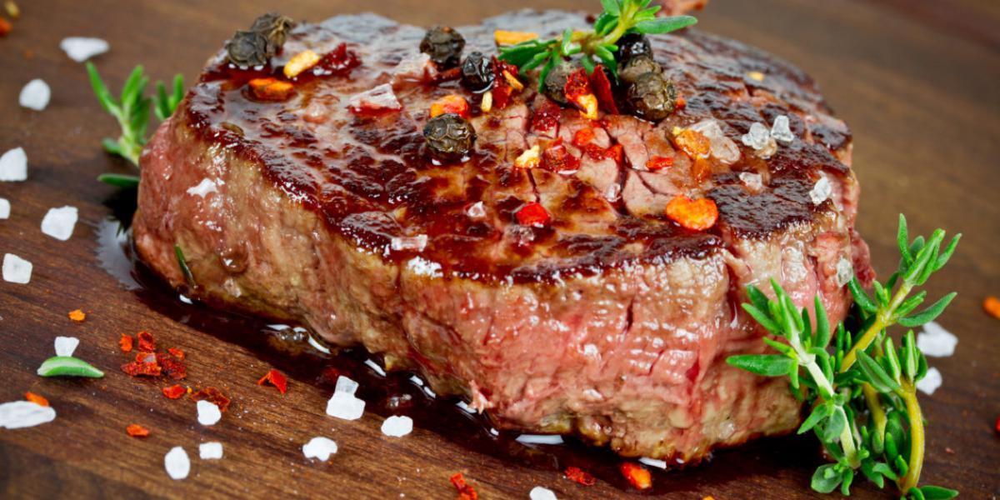

Cardápio
- 𝐹𝐼𝐿𝐸 𝑀𝐼𝐺𝑁𝑂𝑁 𝐺𝑅𝐸𝐿𝐻𝐴𝐷𝑂- R$ 59,90 
- 𝑀𝑂𝑄𝑈𝐸𝐶𝐴 𝐷𝐸 𝑃𝐸𝐼𝑋𝐸- R$ 49,90
- 𝑅𝐼𝑆𝑂𝑇𝑂 𝐷𝐸 𝐿𝐴𝐺𝑂𝑆𝑇𝐴- R$ 64,90
- 𝐹𝑅𝐴𝑁𝐺𝑂 𝐴𝑂 𝐶𝑈𝑅𝑅𝑌 𝐶𝑂𝑀 𝐴𝑅𝑅𝑂𝑍 𝐽𝐴𝑆𝑀𝐼𝑁𝐸- R$ 45,90
- 𝑃𝐴𝑆𝑇𝐴 𝐴𝐿𝐿𝐴 𝐶𝐴𝑅𝐵𝑂𝑁𝐴𝑅𝐴- R$ 42,90
- Filé mignon trufado com purê de batata - R$ 67,90


O sabor da vida, entrelaçado com a arte de um bom café.!
Rua do Sabor, 101 - Bairro das Artes
Telefone: (42) 99357-86397
Email: contato@caféinroma.com